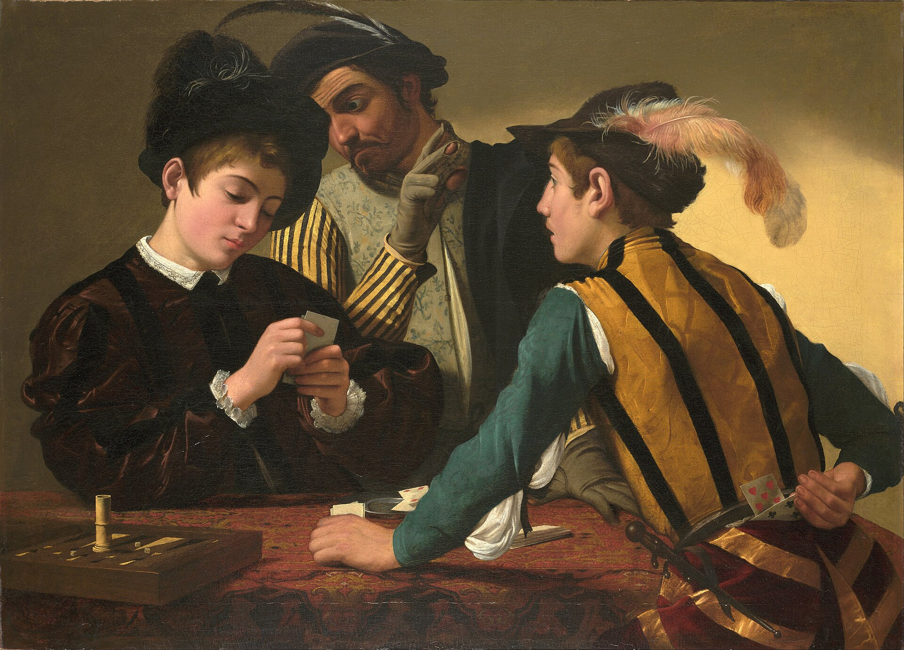
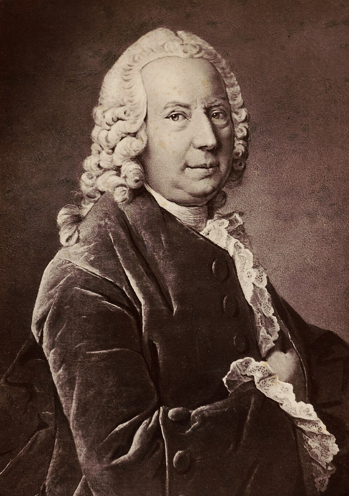
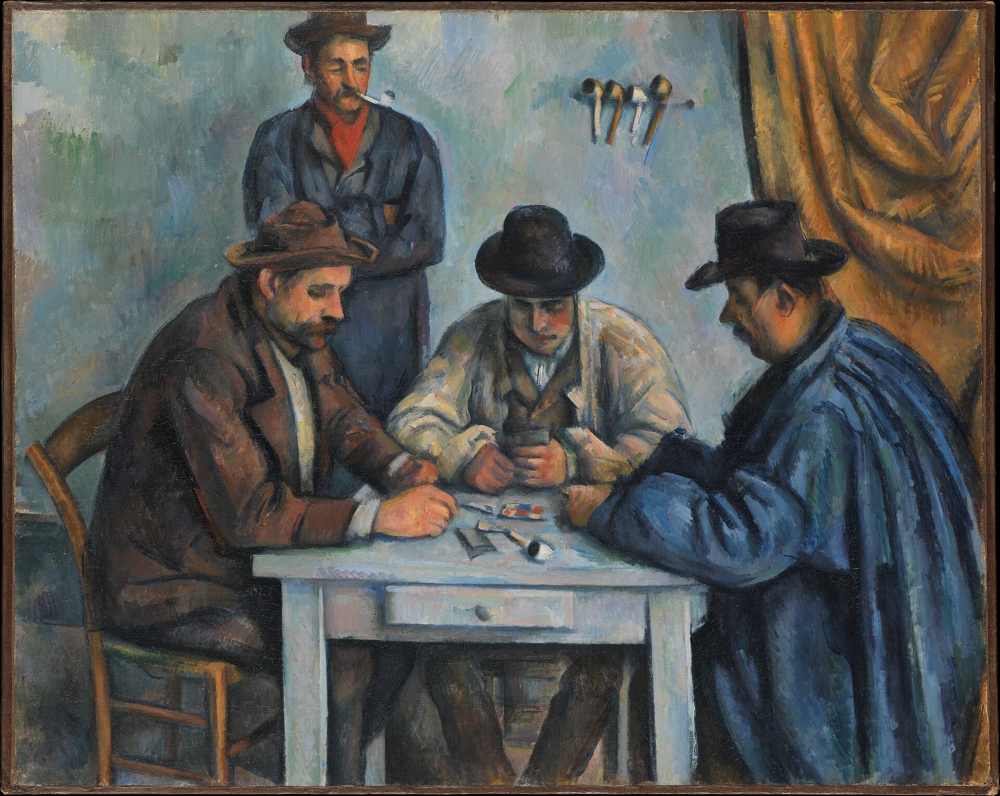

“The heart has its reasons that reason does not know.”Blaise Pascal, Pensées (1670)
In a clinic in Iowa City in the 1980s, the neurologist Antonio Damasio met a patient he would later call Elliot. Elliot had been a successful businessman, a husband and father, until a small benign tumour was removed from his ventromedial prefrontal cortex. The operation was a success. The tumour was gone. By every standard measure, Elliot was unchanged. His IQ remained in the very superior range. His memory was intact. He could reason about logic puzzles, talk about ethical dilemmas, plan in detail. There was only one problem. After the surgery, Elliot could no longer decide anything. He would spend two hours choosing between two ballpoint pens, sincerely listing the considerations on both sides — thickness, ink, weight, longevity — and arriving at no conclusion. He missed appointments because he could not decide what to wear. He lost his job, his marriage, his money. The man who could reason about anything could not, in any practical sense, choose.1
Damasio’s long study of Elliot and patients like him produced one of the most quietly subversive findings in the science of the mind. We are taught, by a long Western philosophical tradition, that good decisions come from reason and that emotion is a contaminant of judgement — that the cool head decides best. Damasio’s patients, whose surgery had spared their reason but disconnected it from the centres of feeling, demonstrated the opposite. A person stripped of emotional response is not a better decider but a paralysed one. Reason without feeling cannot rank options; it can only enumerate them. The Stoic ideal of choosing as a disembodied mind turns out to be a description, not of a sage, but of Elliot — unable to leave the parking garage.
By the end of this chapter you will see why the philosophical tradition was so confidently wrong, and why the actual mechanism of human decision is stranger and more humane than the old picture suggests. You do not decide with your reason. You decide with your reason and your body together, in a single act, and the body usually goes first. Understand that, and a great deal of what looked like irrationality in your own choices — the marriage you cannot leave, the investment you cannot sell, the apology you cannot make — becomes legible.
A man stripped of emotion is not a better decider but a paralysed one. Reason alone enumerates. Only feeling ranks.
The Founding TheoryBernoulli, Utility, and the Beautiful Wrong Idea

The mathematical study of decision begins, properly, in 1738 with a short paper by the young Daniel Bernoulli — one of the gifted Bernoulli family of Basel mathematicians — addressed to the St Petersburg Academy. Bernoulli was trying to explain a small puzzle. If you offered an ordinary person a bet whose expected mathematical return was very high but whose probability of winning was very low, the ordinary person would refuse. By the cold arithmetic of expected return, the bet was a bargain. By the response of every actual human, it was not. Why?
Bernoulli’s answer was so quiet that its enormity is easy to miss. The reason, he proposed, was that the same amount of money does not mean the same amount of value to a poor man and a rich one. A thousand francs is life-changing to a peasant and rounding error to a duke. So the right way to evaluate a gamble is not in money but in the personal usefulness — the utility — of money, and utility, he showed, diminishes as wealth grows. From this single move flowed the whole edifice of expected-utility theory, which would dominate economics for the next two and a half centuries.2
Expected-utility theory — the proposal, formalised by Bernoulli and later by John von Neumann and Oskar Morgenstern in 1944, that a rational person chooses the option whose utility (subjective value), weighted by its probability, is highest. The bedrock model of decision-making for two and a half centuries; still the starting point of every economics textbook.
It is a beautiful theory and an important one. It is also, as a description of how human beings actually decide, wrong in several crucial places. Kahneman and Tversky, whom we met in Chapter Two, spent decades documenting the wrongness, and from their work emerged the alternative we have already encountered — prospect theory, with its loss aversion and crooked value curve. The chapter you are reading does not repeat that story. It adds the three further breakdowns that prospect theory alone did not solve, each of which reveals something deeper about how a human being decides than any equation can.
The First DepartureWhy the Future Cannot Compete With Now
The first failure of pure expected utility is its assumption that a future reward and a present one differ only by a small steady discount — the way compound interest accumulates, smoothly. They do not. The actual human discount on the future is steep, jagged, and asymmetrical, and its name is hyperbolic discounting.
Offered a hundred pounds today or a hundred and ten pounds next week, most people take the hundred today. Offered a hundred pounds in a year or a hundred and ten in a year and a week, the same people will wait the extra week. The two choices are formally identical — the difference is in both cases £10 for seven days — but the first is right next to now, and now has an enormous, distorting gravity that the future does not. We do not discount the future at a single rate. We discount the imminent future against the imminent present at a rate vastly larger than we discount one distant date against another.3
This is why diets begun on Monday so reliably fail; why retirement saving, which any pencil and paper proves is overwhelmingly worthwhile, defeats most adults; why every addict has insisted, lucidly, that they would stop tomorrow. Tomorrow is fine. Today, near you, the cheaper reward has weight tomorrow cannot supply. You are not weak. You are a creature with hyperbolic discount curves doing exactly what such a creature does.
The classic illustration is the marshmallow study run by Walter Mischel and his colleagues at Stanford in the late 1960s and early 1970s. Children of four were left alone in a room with a single marshmallow on a plate, told that if they could wait fifteen minutes without eating it, the experimenter would return and give them two. Some children ate the marshmallow instantly. Some waited. The ones who waited tended, in long-term follow-up, to do somewhat better on a range of life outcomes — though the size of this effect, and how much of it survives once you control for family background, has rightly been the subject of more recent argument.4 What the children unmistakably showed, however, is the texture of present-bias as a discipline: not the absence of desire but the construction of small barriers between desire and its object. The children who waited did not simply have more “willpower”; the videos show them turning their chairs away, covering their eyes, pretending the marshmallow was a picture, doing anything to interrupt the line of sight that made the temptation hot. They were, in miniature, doing what the rest of us must do as adults: putting distance — physical or conceptual — between us and the cheaper reward.
The ancient name for this is the Ulysses contract — after the hero who, knowing his future self would be unable to resist the song of the Sirens, had his men bind him to the mast while they themselves stopped their ears with wax. The Ulysses of the moment used his unimpaired present strength to bind his impaired future self. This is, structurally, the only intervention against present bias that reliably works: not exhortation, not virtue, not promise, but the construction of arrangements by your present self that your future self will be unable to undo. Automatic retirement contributions. Apps that lock your phone during the hours you want to work. The friend who keeps the cigarettes. Tying yourself to the mast before the music starts.
The trick is never to ask your future self to be strong. The trick is to use your present self to take the difficult choice out of your future self’s hands.
The Second DepartureThe Body in the Decision
The second great departure from pure rational calculation is the discovery, mostly through Damasio’s work, that the deciding mind is in constant conversation with the body — and that the body often arrives at the answer first. The cleanest experimental demonstration is what came to be called the Iowa Gambling Task.
A subject sits in front of four decks of cards. They turn over cards one at a time, winning or losing small amounts of play money on each turn. Two of the decks are “bad” — large rewards on most cards, but devastating losses on a few, so that over time they lose money. Two are “good” — smaller rewards, smaller losses, net positive over time. The decks are not labelled. The subject must learn which are which through experience. Healthy adults playing the task gradually shift, over fifty or sixty cards, toward the good decks. By around card eighty most of them can articulate, when asked, why they are doing it: the good decks just feel safer.5
Damasio’s team did something more interesting. They wired the subjects to a galvanic skin-conductance monitor — the same instrument used in polygraphs — which registers tiny autonomic changes when a person becomes anxious. What they found was startling. By around card ten, well before any subject could articulate the rule, the body was already producing an anxiety response when their hand reached toward a bad deck. By card forty, that anxiety response was driving their behaviour even though they had no conscious knowledge of why. The body had figured out the answer fifty cards before the mind could say so. The mind’s eventual realisation, when it came, was a slow translation of what the body had already learnt.
Damasio called these visceral signals somatic markers — bodily flags, often unnoticed, that label particular options as good or bad based on prior emotional learning. He proposed, in his great book Descartes’ Error, that what we experience as a decision is rarely a calm enumeration of options. It is more like a process in which the body labels each option with a small emotional charge — a slight tightening, a small lift, a barely felt aversion — and reason, far from being the engine of choice, is the part of the system that registers which option the body has already preferred and supplies the justification.6

This is what Elliot, with whom we opened, had lost. His reason was perfect but his body no longer marked options as preferable or repugnant. He could enumerate forever and rank nothing. We do not see the centrality of feeling to ordinary decision because it works so smoothly; the moment it breaks down, the calculator alone proves useless.
The Third DepartureThe Decision Made Against the Future We Cannot Bear
The third departure from pure utility is regret. Classical theory said a rational person should compare each option against itself — its own probabilities, its own outcomes — without reference to the road not taken. In actual human life, the road not taken is one of the most important things in the room. We choose, again and again, the option not because it is best but because it is the one we will be able to bear having chosen when the dust settles. The economists Graham Loomes and Robert Sugden gave this its modern formal name — regret theory — and showed in the 1980s that many of the apparent oddities of human choice fall away once anticipated regret enters the equation.7
An ordinary illustration. You drive your usual route to work and arrive ten minutes late because of an accident; you shrug. Tomorrow, on a hunch, you take an unfamiliar shortcut and arrive ten minutes late because that route had an accident; you are tormented for hours. The objective cost is identical. The subjective cost is not, because the shortcut decision invites a particular thought — if only I had taken my usual route — that the usual route did not. We choose, with surprising consistency, in such a way as to minimise the foreseeable haunting. The cautious career, the unsent love letter, the deferred dream are usually less the products of analysis than of an exact prediction of the regret each path would have produced.
This is not, despite the way it sounds, weakness. Regret is one of the brain’s most ancient and effective teachers; a creature incapable of regret would not learn from a single life-threatening mistake. The same wiring that makes a choice harder than its expected value suggests is what kept your ancestors from making the same lethal misstep twice. What we have to learn, as adults living among our choices, is when regret is being a useful teacher and when it is being a tyrant — preventing the necessary departure, the inconvenient honesty, the late but right repair. As one of our colleagues likes to say in his consulting room: do not let the regret of a future self you do not yet know veto the choice your present self can see is right.
The Hardest DecisionsTrolleys, and the Two Moralities Inside You
Some decisions are not about money or convenience but about right and wrong, and these turn out to follow rules of their own. In 1967 the philosopher Philippa Foot proposed, half in jest, a small puzzle. A runaway trolley is about to kill five people on the tracks ahead. You can pull a lever to divert it to a side track where it will kill only one. Should you pull the lever? Most people say yes. Then Judith Jarvis Thomson proposed a second version. The trolley is again about to kill five; this time you are standing on a footbridge above the tracks beside a large stranger, and you realise that pushing him onto the line below will stop the trolley with his body. Should you push? Most people say no. The arithmetic is identical: one life sacrificed to save five. But the cases feel, to nearly everyone, morally different in a deep way.8
Joshua Greene’s fMRI studies in the 2000s gave the difference a mechanism. The lever case activates the calculating regions of the brain — the same regions that solve arithmetic. The push case activates the emotional regions — the same regions that recoil at the thought of a hand on a stranger’s back, of a particular human being deliberately killed by your touch. Both reactions are real, biological, and old, and any practical morality has to take both seriously.9 The clean calculus of utilitarianism — greatest good for the greatest number — is one half of us. The recoil from doing the act with our own hand is the other. People who feel only the first are something we recognise in fiction as monstrous; people who feel only the second cannot make any policy that requires trade-offs at all. The mature moral life lives, uncomfortably, between the two.
The Objection That Matters“Aren’t Most Decisions Just Personal Preference?”
Here is the honest pushback. You have described some peculiar laboratory cases and a few neurological patients. My actual decisions — what to eat, who to call, which job to take — do not feel like any of this. They feel like preferences. There is nothing wrong with me; I am just choosing what I want.
The objection is fair, and the answer is that the structures we have described do not replace the felt experience of preference; they are the machinery that produces the feeling of preference. When the marshmallow study’s four-year-old “just preferred” to eat the marshmallow now, the discount curve was making the preference. When the Iowa Gambling subject “just preferred” the good decks, the somatic markers were making the preference. When you “just prefer” the safer career, the anticipation of regret is, often, what is doing the preferring. The felt sense of choosing is not denied by any of this; it is explained.
And there is a practical reason to care, which is the one we have insisted on through every chapter of this volume. The decisions whose machinery you understand are the ones you can occasionally intervene in. Hyperbolic discounting cannot be willed away in the moment, but a Ulysses contract written now can spare you the moment. Loss aversion cannot be turned off, but knowing that “keep / sell” questions are systematically biased toward keep can prompt the harder question: if I did not already own this, would I buy it today? Anticipated regret cannot be silenced, but seeing it for what it is — an old, often wise, sometimes tyrannical teacher — lets you tell the cases apart. The science does not displace your sense of choosing. It gives you, at the rare and important moments, somewhere to push back from.
“How does a person actually decide?”
After two and a half centuries of the rational model, the consensus is no longer that we calculate. Six who have spent their lives on what we do instead.
“A decision is not a single operation in a single place. It is a competition between options weighted by emotional history, settled in milliseconds in the prefrontal cortex with input from the body. The phrase ‘made up my mind’ describes the moment one option’s body-flag became strong enough to win.”
“The honest position now is that humans are not the rational utility-maximisers our textbooks once assumed. We are predictable patterned deciders, and our patterns — loss aversion, present bias, regret aversion — can be modelled, designed for, and sometimes nudged. The mistake was ever expecting a calculator.”
“What I see is people who cannot decide because the option they know is right carries an anticipated regret they cannot bear, or because the option they know is wrong carries a present pull their future self has not yet had to feel. Most therapy on indecision is, at root, the work of bringing these usually unconscious forces to where they can be named.”
“And ask which body the decision is being taken in conversation with. The patient who cannot leave the cruel marriage may not be deciding with her own discount curve; she may be deciding with her mother’s. The bodies that mark our options are not entirely our own. Some of the deepest work is to recognise whose voice is in the somatic marker.”
“If decision is part-discount, part-marker, part-regret, what then is free will? Perhaps something narrower and more achievable than the tradition imagined: not unconstrained choosing, but the ability to install, in advance, the conditions under which the choice you on reflection want will be the easier one.”
“Then live this way: stop trying to be rational, which is an act we are biologically poor at, and start being deliberate, which we can sometimes manage. Bind yourself to the mast for the things that matter. Pick the option you will be able to live with, not the one with the best spreadsheet. And remember that to decide nothing is also to have decided.”
Where It Touches Your LifeThree Practical Disciplines
Bind yourself to the mast for the things that matter. Decide once, when calm, and make the decision difficult or impossible to reverse in the heat of the moment. Automatic transfers to savings before the salary lands; the app that locks distracting sites during work hours; the agreement with a partner about the alcohol in the house; the personal trainer paid in advance. Each of these is a Ulysses contract. None of them depends on you being strong tomorrow. That is the only reason they work.
For any “keep or sell” question, run the reversal. Loss aversion and the endowment effect, as we saw in earlier chapters, make us cling to what we have. The cleanest cure is one disciplined question: if I did not already own this — this stock, this job, this car, this relationship — would I acquire it today at this price? If the answer is no, you are not choosing to keep. You are choosing to avoid the pain of leaving. The two are not the same, and the difference is sometimes a life.
Imagine the future regret on both sides, not just one. The mind’s default, when contemplating a decision, is to imagine the regret of the riskier option going wrong. It rarely, with the same vividness, imagines the regret of the safer option being a quiet life half-lived. The discipline is to picture, in equal detail, both rooms at age eighty: the room in which you took the risk and it failed, and the room in which you did not take the risk at all. Some lives turn on which room is imagined more clearly. Imagine both.
Myth vs. RealitySetting the Record Straight
What We Like to Believe
“Good decisions come from clear-headed reasoning. Emotion clouds judgement. The cool calculator decides best, and a person who can leave their feelings at the door will see the right answer plainly.”
What the Evidence Shows
The cool calculator, when cleanly separated from feeling, cannot decide at all — only enumerate. Real human decisions rest on a body that flags options as preferable or repugnant before reason arrives. Emotion is not the enemy of judgement; it is the engine of judgement. The work is not to remove feeling but to know whose feeling you are deciding with and whether it is teaching or tyrannising you.
The marshmallow study’s famous long-term predictions have been weakened by larger replications that found much of the effect washes out once you control for socio-economic background and home environment; the children who waited may have been waiting because the environments they came from had taught them that promised second marshmallows tend to arrive. The somatic-marker hypothesis is theoretically powerful and empirically supported but not as clean a story as the popularisations suggest. The neural picture of moral judgement is still actively contested. Hold the framework as a working map; hold each specific number with appropriate suspicion.
The lines worth carrying out of this chapter.
- Reason without feeling cannot rank. Only feeling decides. Elliot could enumerate forever; he could not choose. Emotion is the engine of judgement, not its enemy.
- Now has gravity the future does not. Hyperbolic discounting makes today’s cheaper reward beat tomorrow’s greater one. The trick is never willpower; it is binding yourself to the mast before the music starts.
- The body decides first. Somatic markers flag options as good or bad below conscious knowledge; what feels like “just preferring” is usually the body having already preferred.
- We choose to minimise foreseeable regret as much as to maximise expected good. The road not taken is part of the calculation, whether or not you let it be.
- For any “keep or sell,” ask the reversal. If I did not already own this, would I acquire it today? The answer often reveals whether you are choosing or merely clinging.
If you keep one sentence: stop trying to be rational — you are not built for it — and start being deliberate, which you can sometimes manage; bind yourself to the mast for what matters, and treat your body’s quiet vote with the respect it earned over a million years of being right.
Research ReferencesSources & Notes
- ReferenceDamasio, A. R., Descartes’ Error: Emotion, Reason, and the Human Brain (1994) — the case of Elliot.
- HistoryBernoulli, D., “Specimen theoriae novae de mensura sortis” (1738); modern English translation in Econometrica (1954). Von Neumann, J. & Morgenstern, O., Theory of Games and Economic Behavior (1944) — the axiomatic basis of expected-utility theory.
- ScienceAinslie, G., “Specious reward: a behavioral theory of impulsiveness and impulse control,” Psychological Bulletin (1975); Laibson, D., “Golden eggs and hyperbolic discounting,” Quarterly Journal of Economics (1997).
- DebatedMischel, W., Shoda, Y. & Rodriguez, M. L., “Delay of gratification in children,” Science (1989); Watts, T. W. et al., “Revisiting the marshmallow test” (large replication), Psychological Science (2018).
- ScienceBechara, A., Damasio, A. R., Damasio, H. & Anderson, S. W., “Insensitivity to future consequences following damage to human prefrontal cortex,” Cognition (1994) — the Iowa Gambling Task.
- DebatedDamasio, A. R., “The somatic marker hypothesis and the possible functions of the prefrontal cortex,” Philosophical Transactions of the Royal Society B (1996); subsequent reviews include Dunn, B. D. et al., Neuroscience & Biobehavioral Reviews (2006), which give a more mixed picture.
- ScienceLoomes, G. & Sugden, R., “Regret theory: an alternative theory of rational choice under uncertainty,” Economic Journal (1982); Bell, D. E., “Regret in decision making under uncertainty,” Operations Research (1982).
- HistoryFoot, P., “The problem of abortion and the doctrine of the double effect,” Oxford Review (1967); Thomson, J. J., “Killing, letting die, and the trolley problem,” The Monist (1976).
- ScienceGreene, J. D. et al., “An fMRI investigation of emotional engagement in moral judgment,” Science (2001); Greene, J., Moral Tribes (2013).
Citations support the science presented; a production edition would carry full bibliographic detail and DOIs, externally verified.
Going FurtherRecommended Books
Read
- Antonio Damasio, Descartes’ Error (1994) & The Feeling of What Happens (1999)
- Daniel Kahneman, Thinking, Fast and Slow (2011)
- Richard Thaler & Cass Sunstein, Nudge (2008)
- Joshua Greene, Moral Tribes (2013)
- Jonathan Haidt, The Righteous Mind (2012)
Watch & Listen
- Damasio on the somatic marker hypothesis — lectures and interviews
- Mischel on the marshmallow test (and the long, careful replication conversation)
- The Trolley Problem — Harvard Justice course (Michael Sandel)